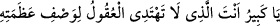

değersiz kalır.
Şerhu Hizbi’l-bahr’de der ki: “Allah Teâlâ’nın her şeyin üstünde bir yüceliğe sâhip
olduğunu bilen kimse, bütün himmetini O’na bağlar, O’nun dışındakini tercih etmez, hep
yüce işleri yapmayı sever ve düşük işlerle uğraşmaktan nefret eder. Hz. Ali (r.a.)’ın:
“Himmetin yüceliği îmandandır.” dediği nakledilmiştir.”
Hâfız der ki:
Sen gibi kadri yüce bir Hümâ’nın kemik hırsı olması yazıktır.
Yazık ki himmet gölgesini ehli olmayanların üzerine attın.
Allah Teâlâ’nın büyüklüğünü tanıyıp kendi büyüklüğünü unutan kişi, tevâzu ve insaf
kulpuna yapışmış ve hürmeti muhâfaza etmiş olur.
el-Erbaîne’l-İdrîsiyye’de şöyle denilir:
“Ey büyük olan Allâh’ım! Sen, akılların azametini/büyüklüğünü anlamaya yol
bulamadığı yüce bir Zât’sın” İmam Sühreverdî (r.h.) der ki. “Borcu fazla olan kimse bu
zikri çok yaparsa borcunu öder ve rızkı genişler. Bir rütbeden azledilen kişi, yedi gün
oruçlu olarak günde bin defa bu zikri yaparsa, tekrar eski mertebesine döner. Melek bile
olsa durum böyledir.”
“O’ndan başka taptıkları ise hiç şüphesiz bâtıldır.” sözünde Allah dışında talep
edilen her şeyin bâtıl olduğuna işâret vardır:. Onları mecbûren bırakmadan önce
gönüllü olarak terk etmek ve fırsat varken yüce ve büyük olan Allâh’ı talebe koşmak
gerekir.
Ömrü âh u vâh ile zâyi etme;
Fırsat değerli, vakit kılıç gibi keskindir.
Sakın kaçırma fırsatı, çünkü âlem bir an gibi gelip geçicidir.
Âlimin nazarında bir nefeslik zaman bir cihandan daha değerlidir.
Allah Teâlâ’dan, bu hakikatleri anlamayı dileriz.
[100]. Tirmizî, Sevabu’l-Kur’ân 14; Dârimî, Fedâilu’l-Kur’ân 1.